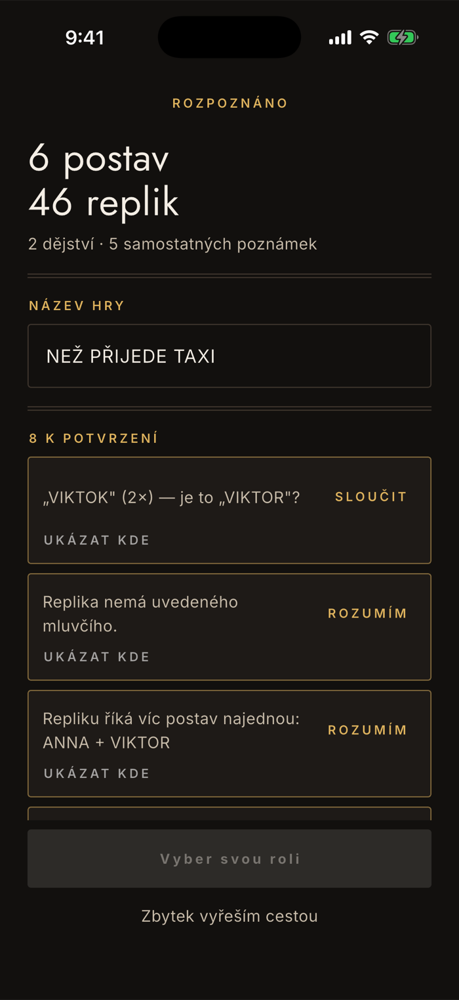
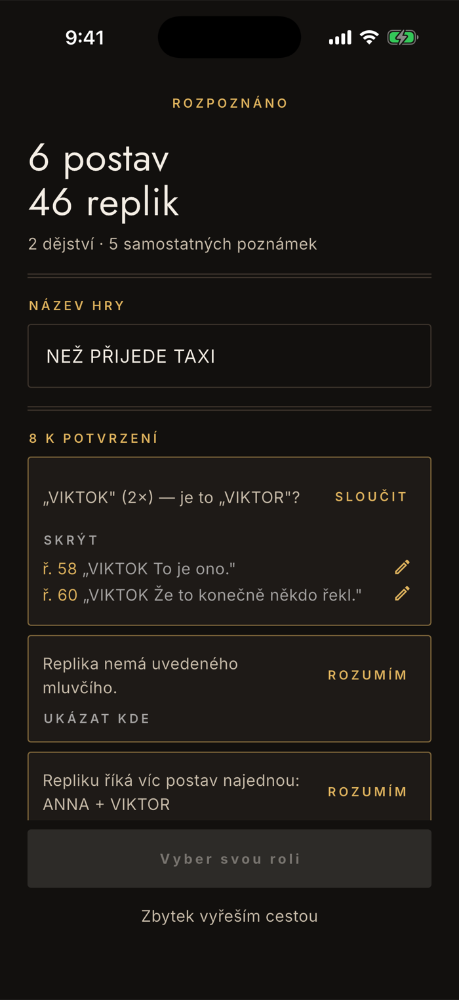
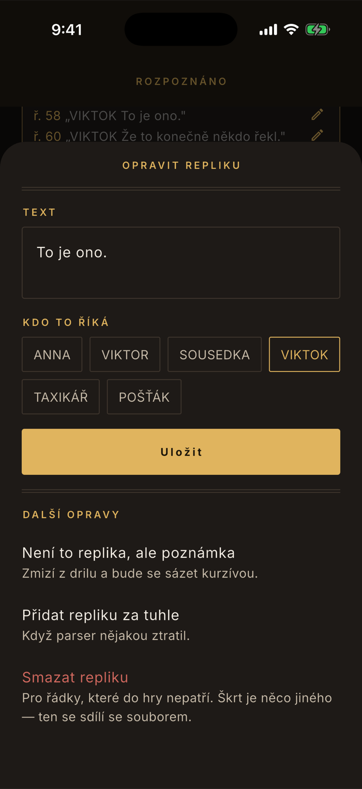
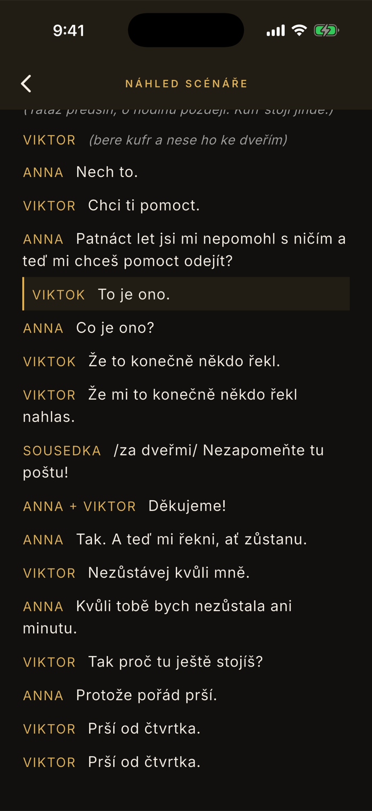
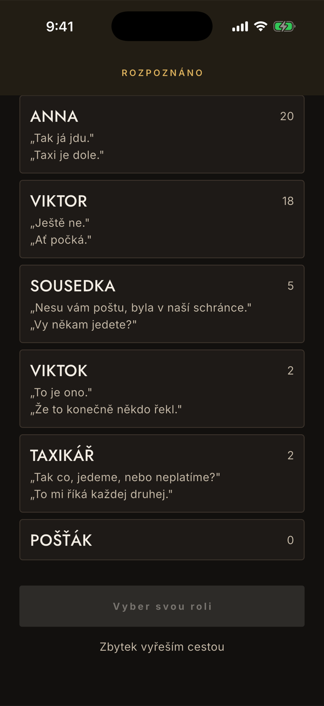

Začínáme
Co appka ve scénáři pozná
Tady všechno začíná. Než se dostaneš k drilu, musí appka z jednoho dlouhého textu poznat, kdo mluví a kde končí replika — a přiznat se tam, kde si není jistá. Tahle stránka ukazuje, co v textu najde a co s tím můžeš udělat.
Hned po importu
Obsazení, repliky, struktura
Appka projede text a řekne, co v něm našla. Trvá to desítky milisekund, i u celé hry.
Postavy si najde sama
Podle toho, která jména se v textu opakují před replikou. Nepotřebuje seznam osob ani jednotný zápis — a když seznam osob v textu je, přibere z něj i postavu, která nemá ani jednu repliku.
Pozná dějství a scénické poznámky
Hlavičky dějství, text v závorkách i samostatné poznámky mezi replikami. Poznámky se nedrilují a ve čtečce se sázejí kurzívou.
Název hry odhadne, ty ho můžeš přepsat
Bere ho z prvního řádku, takže někdy chytne jméno autora místo titulu. Pole je rovnou přepisovatelné — oprav ho hned, ať ti v knihovně nesvítí „Cast prvni.docx".

Nálezy
Co appka nehádá, na to se zeptá
Tam, kde si parser není jistý, nerozhoduje za tebe. Udělá nález a nabídne opravu. Nálezy jsou seskupené podle příčiny, ne podle řádku — dva stejné překlepy jsou jedna položka a jedno ťuknutí.
Ukázat kde
Rozbalí citace dotčených řádků s číslem, jak je počítá Word. Nejvýš pět, zbytek se přizná počtem.
Jedno ťuknutí, celá příčina
U překlepu ve jméně je to Sloučit, u zdvojené repliky Smazat, jinde Rozumím. Sloučení přiřadí správné postavě všechny výskyty naráz.
Nemusíš to řešit teď
Ťuknutím na Zbytek vyřeším cestou se nálezy odklepnou naráz. Opravit cokoli půjde i potom, přímo v textu.

Deset věcí, které appka hlásí
Překlep ve jméně postavy
„VIKTOK" místo „VIKTOR". Appka to pozná podle toho, že se jméno objevuje řídce a správný tvar výrazně převažuje — dvě různé postavy s podobným jménem se slučovat nenabízejí. Nabídne Sloučit, což přiřadí všechny výskyty správné postavě.
Replika bez uvedeného mluvčího
Ve scénářích se jméno vynechává, když postava pokračuje po scénické poznámce. Appka repliku nezahodí ani neuhodne potichu — nechá ji a zeptá se, kdo ji říká. V náhledu je u ní ???.
Repliku říká víc postav najednou
„ANNA a VIKTOR", „TOM+DICK". Zůstane sborová, dokud neřeknete jinak. V panelu opravy jde přiřadit jen jednomu.
Dvě stejné repliky hned za sebou
Skoro vždycky pozůstatek editace souboru, ne opakování ve hře. Nabídne Smazat.
Text v lomítkách
/za dveřmi/ může být scénická poznámka, ale taky překlad cizí řeči, který se má hrát. Appka nerozhodne za vás a nabídne přeznačení na poznámku.
Neuzavřená závorka
Když poznámka nemá konec, vezme se do konce repliky. Appka to přizná, ať se nestane, že se místo textu naučíte scénickou poznámku.
Řádek, který se nepodařilo zařadit
Patičky, doložky agentur, čísla stran — věci, které do hry nepatří, ale bývají uprostřed textu. Appka je nezařadí a řekne to; může se pod tím ale skrývat i ztracená replika, proto na to upozorní.
Úvod hry
Titul, autor, seznam osob, popis scény. Není to chyba — jen se to nedá zařadit mezi repliky, tak to appka vyjmenuje, abyste věděli, co s tím udělala.
Nerozpoznala se žádná postava
Skoro vždycky to znamená, že je vzorek moc krátký. Rozpoznávání stojí na tom, že se jméno opakuje, takže u jedné scény se nenasbírá dost. Vložte celou hru, ne jedno dějství.
Text se nepodařilo rozdělit na repliky
Textu je dost, ale nejde v něm najít, čím se jméno odděluje od řeči. Musí to být tabulátor, několik mezer, nebo dvojtečka. Jedna mezera bez dvojtečky nestačí — tak vypadá typicky kopie z PDF.
Oprava
Opravíš to rovnou u nálezu
Tužka u citovaného řádku otevře stejný panel, jaký má čtečka i dril. Nemusíš nikam odcházet a nic hledat.
Text i mluvčí
Text repliky se dá přepsat a mluvčího vybereš ťuknutím na jméno. U sborové repliky nechá appka výběr prázdný, dokud si nevybereš.
Není to replika, ale poznámka
Přeznačí řádek na scénickou poznámku. Zmizí z drilu a bude se sázet kurzívou — na světelné pokyny přesně to, co je potřeba.
Přidat, rozdělit, smazat
Když parser repliku ztratil, dopíšeš ji. Dlouhou repliku rozdělíš tam, kde máš kurzor. Smazání je pro řádky, které do hry nepatří — škrt je něco jiného, ten se sdílí se souborem.

Náhled
Podíváš se, jak to vypadá v textu
Ťuknutí na citaci otevře scénář na tom řádku. U „kdo to říká" totiž rozhoduje kontext okolních replik, ne jeden řádek vytržený z textu.
Otevře se na správném místě
Dotčený řádek je zvýrazněný zlatou linkou a stojí ve čtvrtině obrazovky, takže je nad ním vidět, co mu předchází.
Opravit jde i odsud
Ťuknutím na kteroukoli repliku otevřeš tentýž panel opravy. Až se vrátíš, nálezy se přepočítají — a ty, kterým jsi odebral příčinu, zmizí samy.

Poslední krok
Vybereš svou roli
Postavy jsou seřazené od nejupovídanější a u každé je počet replik a dvě ukázky, ať poznáš tu svoji i u jmen, která se v textu píšou různě.
Počet replik napoví
Hlavní role mívá stovky, epizodní jednotky. Když u své role vidíš podezřele málo, nejspíš zbývá vyřídit nález s překlepem ve jméně.
Nula replik není chyba
Postava ze seznamu osob, kterou parser nenašel v dialogu, se ukáže s nulou. Buď v úryvku nemluví, nebo se v textu píše jinak než v seznamu.

Proč to appka radši přizná, než uhodne
Rozpoznávání je deterministické — žádná umělá inteligence, žádné dohadování. Je to záměr, ne omezení: halucinovanou repliku byste se naučili a zjistili to na zkoušce. Proto parser tam, kde si není jistý, nerozhodne za vás, ale nález ohlásí a nabídne opravu na jedno ťuknutí.
Ze stejného důvodu se za opravu vad importu nikdy neplatí. Editace replik, slučování jmen i oprava mluvčího jsou v základní verzi a zůstanou v ní — je to náprava toho, co appka nezvládla, ne prémiová funkce.
A celé se to děje ve vašem telefonu. Text se nikam neodesílá, appka nemá server. Podrobně v zásadách ochrany osobních údajů.
Když appka scénář nepřečte
Jméno postavy musí být od textu oddělené tabulátorem, několika mezerami, nebo dvojtečkou. Když se text nepodaří rozdělit, appka to řekne rovnou a nic se neuloží — nic tím nezkazíte. Podrobnosti o formátech jsou v návodu Jak dostat scénář do appky.
Našla appka ve vašem scénáři něco, čemu nerozumíte?
contact@lukashula.cz